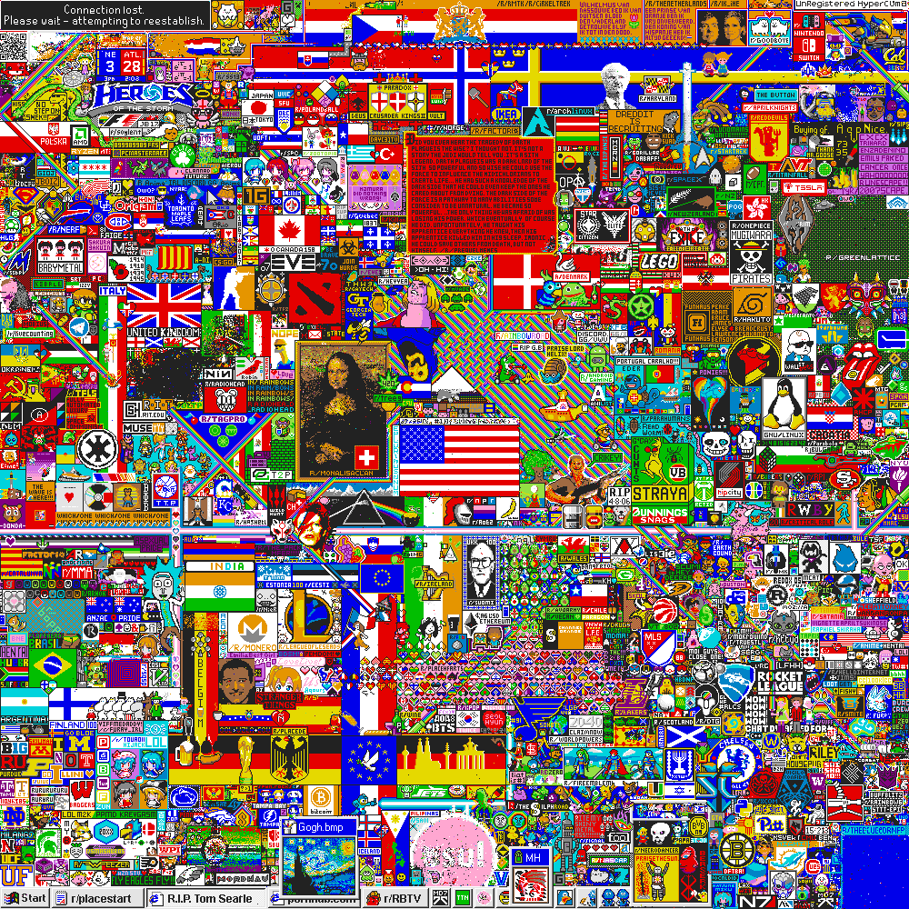

An Organizational Fruit Fly
r/place as a model organism for cumulative grounded theory.
Biology accumulates knowledge around the fruit fly. Organization science has no common organism to study. From 31 March to 3 April 2017, over a million Reddit users spent 72 hours making and defending pictures on a shared canvas, one pixel at a time. We propose this event as a model organism for how organizations emerge and evolve.
Explore three events on the canvas, the instrument we used to read it, and what it found in 705 communities. Reviewers: Check the papers links each claim in the proposal and its technical appendix to its evidence.

How the study works
The study has three parts, run in order.
- Collection Every pixel change, joined with the posts and comments of the communities behind the artworks. A census decides which 705 communities count as cases.
- Community coding One AI agent reads each community's full record and codes how its members organized. It sees no other community.
- Aggregation A second agent composes the 705 coded cases into one population model. It returns the model to every community coder, revises it, and groups the communities into candidate organizational forms.
What we found
The run followed one community closely and all 705 together.
- One community: r/PlaceNL Founded for the event to coordinate the Dutch artworks. Its coders turned 701 posts and comments into 246 codes and 21 themes. At the return its coder reported canal houses erased by the community's own defense script; corrections from other communities revised the model's account of repair, and r/PlaceNL's line became a specification of it.
- The population model Each community coded on its own, then composed into eight aggregate dimensions and one model. Communities that asked for similar changes to the model form six candidate organizational forms.